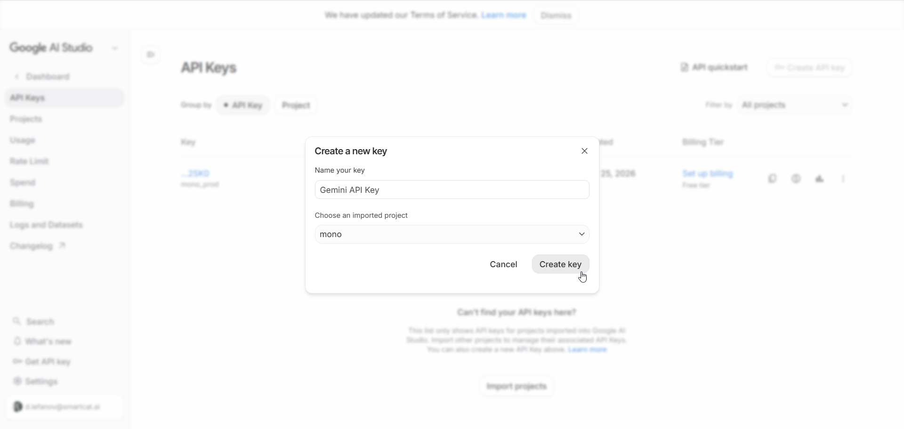

Google's Gemini API has a free tier that's good enough for real work — transcription, summaries, chat, even audio processing. But there's a catch: if you hit the rate limits too often, Google doesn't just throttle you. They revoke your API key entirely, and you have to create a new one.
This guide shows you how to get a free Gemini API key, what the limits actually are, and how to write code that stays within them. We'll use a pattern we developed for mono that has run for months without a single key revocation.
The short version
- 1. Free tier: 10 requests/minute and 250 requests/day
- 2. Don't wait for 429 errors — count requests yourself
- 3. Save your daily count to a file so it survives restarts
- 4. Add a 30-minute backoff if you ever do get a 429
- 5. Have a fallback provider ready for when you hit the limit
Step 1 — Get a free API key
Go to Google AI Studio and sign in with your Google account. Click Create API key, pick a project (or create one), and copy the key.

That's it — no credit card, no billing setup. The key works immediately with the free tier limits.
Keep your key safe. Anyone with your key can use your quota (and get it revoked). Store it in an environment variable or a secrets manager, not in your code.
Step 2 — Understand the limits
The free tier has two limits that matter:
| Limit | Value | Resets |
|---|---|---|
| RPM (requests per minute) | 10 | Rolling 60-second window |
| RPD (requests per day) | 250 | Midnight Pacific time |
There's also a token limit (about 1 million tokens per minute), but in practice you'll hit RPM or RPD first unless you're sending huge documents.
The real risk isn't the 429. When you exceed the limit, Google returns a 429 "Too Many Requests" error. That's fine — you can retry later. The problem is that if your code keeps hitting 429s, Google's abuse detection kicks in and revokes your key. Then you need to create a new one, and your old code stops working.
Step 3 — Track your usage proactively
The key insight is: don't wait for 429 errors. Instead, count your requests yourself and stop before you hit the limit. This way Google never sees you as abusive.
Here's the pattern in Python:
# Rate limiting state
RPM_LIMIT = 9 # Stay under 10
RPD_LIMIT = 240 # Stay under 250
request_timestamps = [] # Timestamps of requests in the last 60s
daily_requests = 0
last_reset_date = None
def is_available():
"""Check if we can make a request without hitting limits."""
global daily_requests, last_reset_date
# Reset daily counter at midnight Pacific
today = datetime.now(ZoneInfo("America/Los_Angeles")).date()
if last_reset_date != today:
daily_requests = 0
last_reset_date = today
request_timestamps.clear()
# Check daily limit
if daily_requests >= RPD_LIMIT:
return False
# Check per-minute limit (sliding window)
cutoff = time.time() - 60
while request_timestamps and request_timestamps[0] < cutoff:
request_timestamps.pop(0)
if len(request_timestamps) >= RPM_LIMIT:
return False
return True
def track_request():
"""Record that we made a request."""
global daily_requests
daily_requests += 1
request_timestamps.append(time.time())
Before every API call, check is_available(). If it returns False, don't make the request — either wait, or fall back to another provider.
Why use 9 and 240 instead of 10 and 250?
Buffer room. Network timing isn't perfect, and Google's counting might differ slightly from yours. Staying a bit under the limit means you never accidentally go over.
Step 4 — Persist the counter across restarts
If your app restarts, your in-memory counter resets to zero — but Google's counter doesn't. If you've used 200 requests today and your app restarts, it thinks it has 240 left when it actually has 50. That's a fast track to a 429.
The fix: save your daily count to a file.
import json
from pathlib import Path
STATE_FILE = Path("gemini_rate.json")
def save_state():
STATE_FILE.write_text(json.dumps({
"date": last_reset_date.isoformat(),
"requests": daily_requests,
}))
def load_state():
global daily_requests, last_reset_date
try:
data = json.loads(STATE_FILE.read_text())
saved_date = date.fromisoformat(data["date"])
today = datetime.now(ZoneInfo("America/Los_Angeles")).date()
if saved_date == today:
daily_requests = data["requests"]
last_reset_date = today
except (FileNotFoundError, json.JSONDecodeError, KeyError):
pass # Start fresh
Call load_state() when your app starts, and save_state() after each request. Now restarts don't lose your count.
Step 5 — Handle 429s gracefully
Even with proactive counting, you might still get a 429. Maybe Google's clock differs from yours, or there's a bug in your code. When that happens, don't just retry immediately — that makes things worse.
unavailable_until = None
def mark_rate_limited():
"""Back off for 30 minutes after a 429."""
global unavailable_until
unavailable_until = datetime.now() + timedelta(minutes=30)
print(f"Got 429 — backing off until {unavailable_until}")
def is_available():
# ... existing checks ...
# Check if we're in a backoff period
if unavailable_until and datetime.now() < unavailable_until:
return False
# ... rest of function ...
Why 30 minutes? Google's throttling after a 429 is inconsistent — sometimes requests pass, sometimes they don't. A longer backoff avoids hammering the API while it's already unhappy with you.
Step 6 — Add a fallback provider
The free tier is great, but 250 requests per day isn't infinite. For a production app, you need a fallback for when the quota runs out.
Options:
- OpenAI — no free tier, but GPT-4.1 Mini is cheap (fractions of a cent per request)
- Anthropic Claude — also no free tier, Claude Haiku is similarly priced
- Local models — free and unlimited, but needs decent hardware
The pattern is simple:
def make_llm_request(prompt):
if gemini.is_available():
try:
response = gemini.generate(prompt)
gemini.track_request()
return response
except RateLimitError:
gemini.mark_rate_limited()
# Fall back to paid provider
return openai.generate(prompt)
This way you use the free tier when available and automatically switch when it's not.
Complete example
Here's everything together in a single module:
import json
import time
from datetime import datetime, date, timedelta
from pathlib import Path
from zoneinfo import ZoneInfo
import httpx
GEMINI_API_KEY = "your-key-here" # Use env var in production
API_URL = "https://generativelanguage.googleapis.com/v1beta/models/gemini-2.5-flash:generateContent"
STATE_FILE = Path("gemini_rate.json")
PACIFIC = ZoneInfo("America/Los_Angeles")
RPM_LIMIT = 9
RPD_LIMIT = 240
_timestamps = []
_daily = 0
_last_date = None
_backoff_until = None
def _load():
global _daily, _last_date
try:
data = json.loads(STATE_FILE.read_text())
if date.fromisoformat(data["date"]) == datetime.now(PACIFIC).date():
_daily = data["requests"]
_last_date = datetime.now(PACIFIC).date()
except:
pass
def _save():
STATE_FILE.write_text(json.dumps({
"date": (_last_date or datetime.now(PACIFIC).date()).isoformat(),
"requests": _daily
}))
def is_available():
global _daily, _last_date, _timestamps
# Load state on first call
if _last_date is None:
_load()
# Reset at midnight Pacific
today = datetime.now(PACIFIC).date()
if _last_date != today:
_daily = 0
_last_date = today
_timestamps.clear()
_save()
# Check backoff
if _backoff_until and datetime.now(PACIFIC) < _backoff_until:
return False
# Check daily limit
if _daily >= RPD_LIMIT:
return False
# Check per-minute limit
cutoff = time.time() - 60
_timestamps = [t for t in _timestamps if t >= cutoff]
if len(_timestamps) >= RPM_LIMIT:
return False
return True
def generate(prompt):
global _daily, _backoff_until
response = httpx.post(
API_URL,
json={"contents": [{"parts": [{"text": prompt}]}]},
headers={"x-goog-api-key": GEMINI_API_KEY},
timeout=60
)
if response.status_code == 429:
_backoff_until = datetime.now(PACIFIC) + timedelta(minutes=30)
raise Exception("Rate limited")
response.raise_for_status()
# Track successful request
_daily += 1
_timestamps.append(time.time())
_save()
data = response.json()
return data["candidates"][0]["content"]["parts"][0]["text"]
FAQ
What if I need more than 250 requests per day?
You have three options: create multiple API keys (risky — Google may notice), upgrade to a paid tier (starts at $0.075 per million input tokens), or use a fallback provider for overflow.
Does the free tier work for audio transcription?
Yes. Gemini 2.5 Flash can transcribe audio directly — send the audio as base64 and ask it to transcribe. Same rate limits apply.
Why Pacific time for the daily reset?
That's when Google resets the counter. If you're in another timezone and reset at your local midnight, your count won't match Google's.
Can I use this for a production app?
With a fallback, yes. Without one, you'll hit the daily limit during heavy use. The free tier is best for personal projects or as a cost-saver alongside a paid provider.